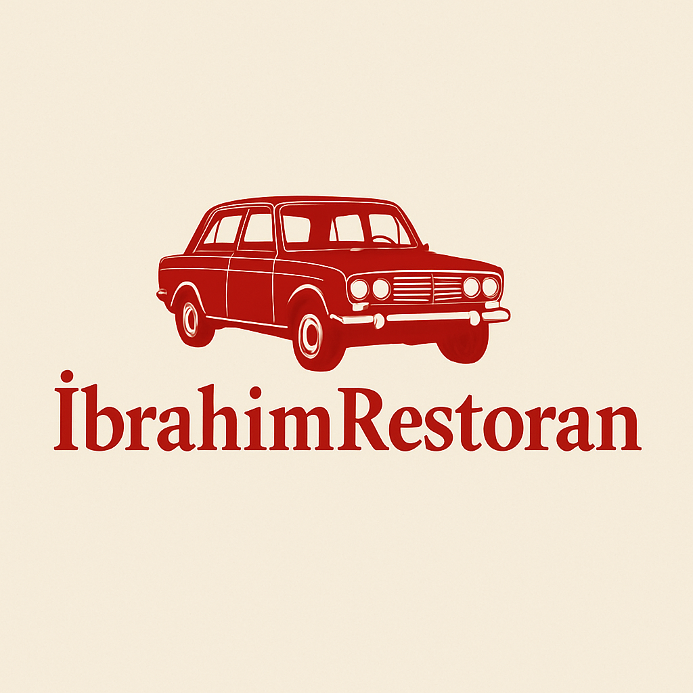

Xoş gəlmisiniz!
İçkilər
Qazan Yeməkləri
Qəlyanaltı
Xəngəllər
Xəmir Yeməkləri
Balıqlar
İçkilər
Çay
1m
Fanta, Cola (1L)
2m
Ayran (Bakal)
1m
Limonad (0.75L)
1.5m
Dovğa (1 stəkan)
1m
Qazan Yeməkləri
Bozbaş
6m
Beçə Qızartma
25m
Tavakabab
5m
Katlet
5m
3 Bacı Dolma
5m
Kələm Dolma
5m
Yarpaq Dolma
5m
Pörtləmə
6m
Piti
6m
Qəlyanaltı
Süzmə
1m
Qatıq
1m
Xama
2m
Acika
1m
Göyərti
1m
Çobansalat
2m
Yumurta Soyutma
2m
Yumurta Qalzok
2m
Pendir
1m
Turşu
1m
Zoğal Turşusu
1m
Xəngəllər
Qıymalı Xəngəl
6m
Beçəli Xəngəl
10m
Gürcü Xəngəli
0.8m
Qurutlu Xəngəl
6m
Xəmir Yeməkləri
Kətə Xamalı
3m
Kətə Nehrə Yağı
3m
Kətə Silvişni Yağ
2.5m
Kətə Yağsız
2m
Qutab Ət
2.5m
Düşbərə
4m
Fəsəli
15m
Balıqlar
Sazan
Qiymət soruşun
Karp
Qiymət soruşun
Belamur
Qiymət soruşun
Sudak
Qiymət soruşun
Taxta Balıq (Leş)
Qiymət soruşun
Taxta Balıq (Balaca)
Qiymət soruşun
Farel
Qiymət soruşun
Xanı
Qiymət soruşun
Menyunu Skan Edin